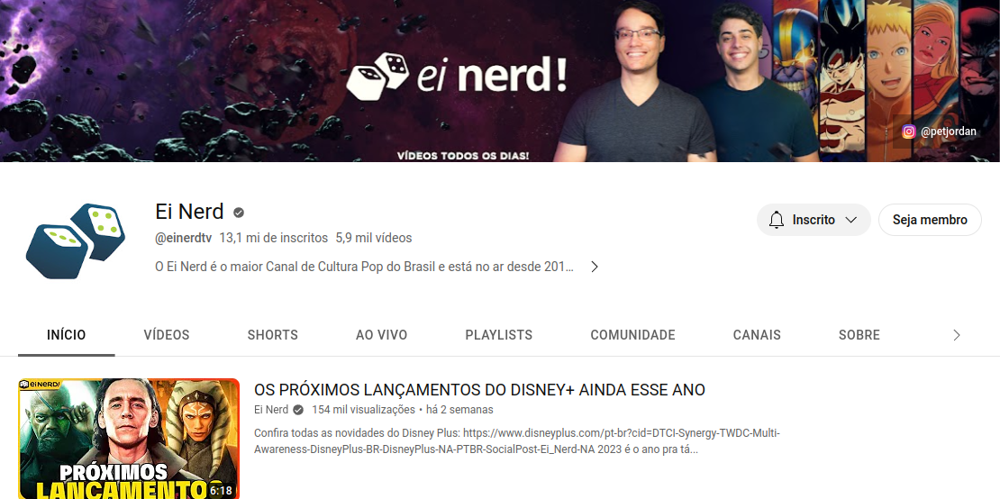

Cultura Pop
Ei Nerd!

O Ei Nerd é o maior Canal de Cultura Pop do Brasil e está no ar desde
2013. Peter Jordan, criador e apresentador do Canal traz, diariamente,
conteúdos informativos e de qualidade sobre tudo que esta relacionado
ao mundo Nerd: animes, quadrinhos, filmes, series, games e mangás.